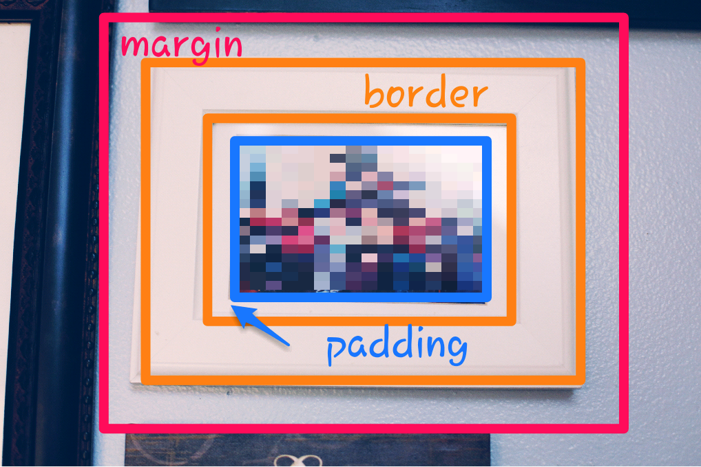

margins, borders, and padding
...or a photo guide to framing
February 6, 2016

Who doesn't enjoy a nice Pinterest DIY once in a while? That sense of satisfaction once your project is complete and looks exactly like the photo. Well here's a neat little project for you. Take your favorite photos and frame them, put some nails (or command strips if you're into that sort of thing), and then place your frames and/or canvases as you see fit into an aesthetically pleasing layout. Spacing them out should be a piece of cake. Just simply:
.frame {
margin: 10px;
border: 5px;
padding: 15px;
}
Oh, wait. That didn't make much sense did it? Unfortunately, spacing your frames after you've already afixed them to the wall isn't as simple as typing in a code. But it would be if your wall was a digital canvas and your tools were markup and styling languages such as HTML and CSS.
HTML, the basic skeletal structure of a website, would be like printing a photo and labeling it a specific name in order for CSS, a styling language, to designate not only the size, and position, but also the space between frames, the borders of the frames, and even the spacing between the picture frame and the photo itself, we'll call it padding.
And so with a photo of a flower (or in my case a real origami flower), we would have:
.flower {
margin: 10px;
border: 10px;
padding: 20px;
}
Which would pretty much look like this:

And if you're wondering, yes, margin, border, and padding are the official words used for these specific properties. It's convenient really, a consistent terminology ensures that a margin is always the space between the frame and other elements, the border is the line around the photo, or content (in our case the frame), and the padding is the space between the edge of the frame and the photo or content. Furthermore, each of these properties come with their own specific attributes that can be further defined. Let me elaborate. If we were to have:
.family-portrait {
margin: 10px;
border: 20px;
padding: 5px;
}
Which would look like this:
We can further expand the code to include more specific attributes for each property.
.family-portrait {
margin: 10px 20px 10px 5px;
border-style: solid;
border-width: 20px;
boder-color: white;
padding: 5px;
}
When expanded, the margin property denotes the top, right, bottom, left margins respectively. It's good to note that margins are invisible and would generally take the color of the background, such as the wall in our examples. The border property is a bit more hefty. It includes attributes for style, width, and color (border-style, border-width, and border-color, respectively). Finally, the padding property is similar to the margin property, in that you can designate the padding for all sides or get specific, and the padding takes on the color of the photo's background (picture a colored piece of paper behind the photo in our example.).
Hopefully, by demonstrating three of the MANY properties CSS has to offer, I've made the technological world a bit more accessible. Then it's not so hard to see that creating a website, or at least some of its layout and design, isn't that different from designing a beautiful wall of photos and canvases.